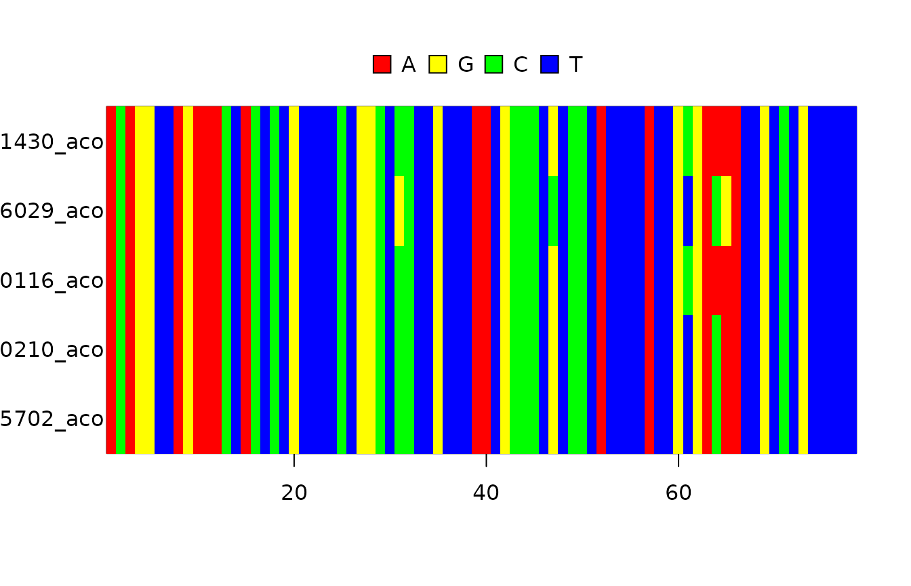

Nested Sampling
Richèl J.C. Bilderbeek
2021-07-14
Source:vignettes/nested_sampling.Rmd
nested_sampling.RmdIntroduction

This vignette demonstrates how to use the Nested Sampling approach to obtain the marginal likelihood and a Bayes factor, as described in [1]
Setup
library(babette)
#> Loading required package: beautier
#> Loading required package: beastier
#> Loading required package: mauricer
#> Loading required package: tracerer
library(testthat)babette needs to have ‘BEAST2’ installed to work.
In the case ‘BEAST2’ is not installed, we’ll use this fabricated data:
out_jc69 <- create_test_bbt_run_output()
out_jc69$ns$marg_log_lik <- c(-1.1)
out_jc69$ns$marg_log_lik_sd <- c(0.1)
out_gtr <- out_jc69Here we setup how to interpret the Bayes factor:
interpret_bayes_factor <- function(bayes_factor) {
if (bayes_factor < 10^-2.0) {
"decisive for GTR"
} else if (bayes_factor < 10^-1.5) {
"very strong for GTR"
} else if (bayes_factor < 10^-1.0) {
"strong for GTR"
} else if (bayes_factor < 10^-0.5) {
"substantial for GTR"
} else if (bayes_factor < 10^0.0) {
"barely worth mentioning for GTR"
} else if (bayes_factor < 10^0.5) {
"barely worth mentioning for JC69"
} else if (bayes_factor < 10^1.0) {
"substantial for JC69"
} else if (bayes_factor < 10^1.5) {
"strong for JC69"
} else if (bayes_factor < 10^2.0) {
"very strong for JC69"
} else {
"decisive for JC69"
}
}
expect_equal(interpret_bayes_factor(1 / 123.0), "decisive for GTR")
expect_equal(interpret_bayes_factor(1 / 85.0), "very strong for GTR")
expect_equal(interpret_bayes_factor(1 / 12.5), "strong for GTR")
expect_equal(interpret_bayes_factor(1 / 8.5), "substantial for GTR")
expect_equal(interpret_bayes_factor(1 / 1.5), "barely worth mentioning for GTR")
expect_equal(interpret_bayes_factor(0.99), "barely worth mentioning for GTR")
expect_equal(interpret_bayes_factor(1.01), "barely worth mentioning for JC69")
expect_equal(interpret_bayes_factor(1.5), "barely worth mentioning for JC69")
expect_equal(interpret_bayes_factor(8.5), "substantial for JC69")
expect_equal(interpret_bayes_factor(12.5), "strong for JC69")
expect_equal(interpret_bayes_factor(85.0), "very strong for JC69")
expect_equal(interpret_bayes_factor(123.0), "decisive for JC69")Experiment
In this experiment, we will use the same DNA alignment to see which DNA nucleotide substitution model is the better fit.
Load the DNA alignment, a subset of taxa from [2]:
fasta_filename <- get_babette_path("anthus_aco_sub.fas")
image(ape::read.FASTA(fasta_filename))
Do the run
In this vignette, the MCMC run is set up to be short:
mcmc <- beautier::create_test_ns_mcmc()For academic research, better use a longer MCMC chain (with an effective sample size above 200).
Here we do two ‘BEAST2’ runs, with both site models:
if (is_beast2_installed() && is_beast2_pkg_installed("NS")) {
out_jc69 <- bbt_run_from_model(
fasta_filename = fasta_filename,
inference_model = create_inference_model(
site_model = beautier::create_jc69_site_model(),
mcmc = mcmc
),
beast2_options = create_beast2_options(
beast2_path = beastier::get_default_beast2_bin_path()
)
)
out_gtr <- bbt_run_from_model(
fasta_filename = fasta_filename,
inference_model = create_inference_model(
site_model = beautier::create_gtr_site_model(),
mcmc = mcmc
),
beast2_options = create_beast2_options(
beast2_path = beastier::get_default_beast2_bin_path()
)
)
}I will display the marginal likelihoods in a nice table:
if (is_beast2_installed() && is_beast2_pkg_installed("NS")) {
df <- data.frame(
model = c("JC69", "GTR"),
mar_log_lik = c(out_jc69$ns$marg_log_lik, out_gtr$ns$marg_log_lik),
mar_log_lik_sd = c(out_jc69$ns$marg_log_lik_sd, out_gtr$ns$marg_log_lik_sd)
)
knitr::kable(df)
}The Bayes factor is ratio between the marginal (non-log) likelihoods. In this case, we use the simpler JC69 model as a focus:
if (is_beast2_installed() && is_beast2_pkg_installed("NS")) {
bayes_factor <- exp(out_jc69$ns$marg_log_lik) / exp(out_gtr$ns$marg_log_lik)
print(interpret_bayes_factor(bayes_factor))
}Whatever the support is, be sure to take the error of the marginal likelihood estimation into account.
References
- [1] Maturana, P., Brewer, B. J., Klaere, S., & Bouckaert, R. (2017). Model selection and parameter inference in phylogenetics using Nested Sampling. arXiv preprint arXiv:1703.05471.
- [2] Van Els, Paul, and Heraldo V. Norambuena. “A revision of species limits in Neotropical pipits Anthus based on multilocus genetic and vocal data.” Ibis.